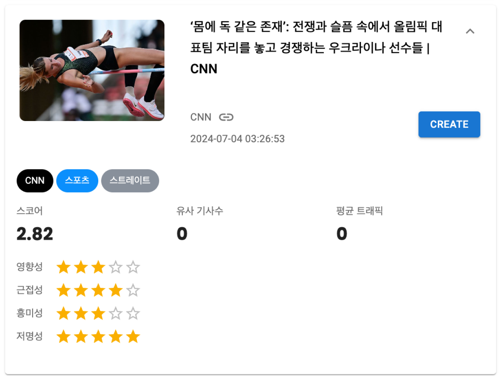
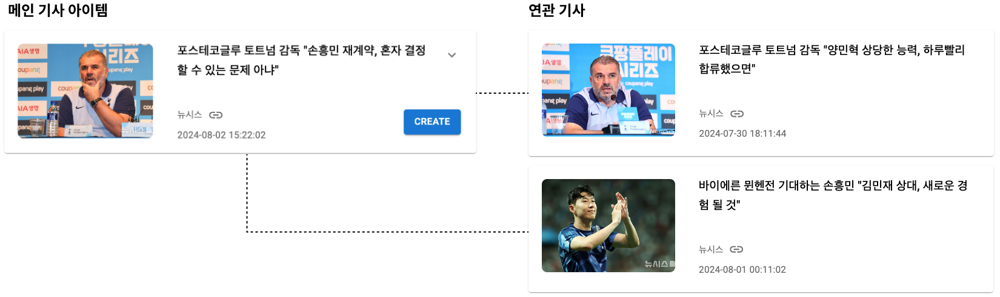
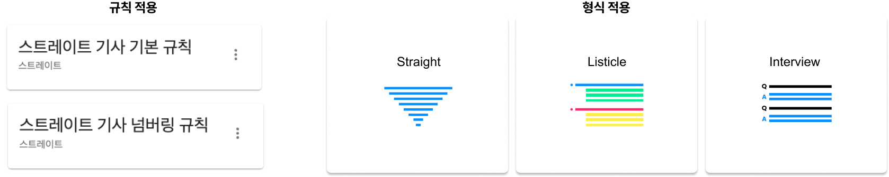
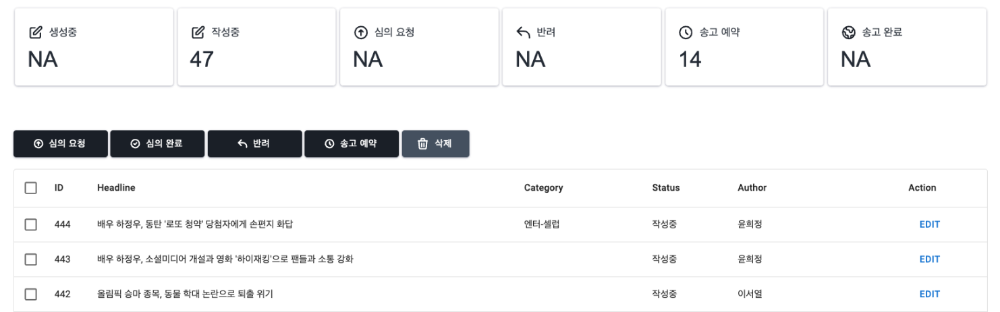

Features
다양한 뉴스 소스 제공
해외 외신, 커뮤니티, SNS 등 다양한 기사 아이템을 대시보드 형태로 제공합니다. 뉴스 API 제공자 등 다양한 소스에서 뉴스를 받아 실시간으로 업데이트하고, 외신 기사 등을 포함해 외국어로 작성된 콘텐츠는 한국어로 번역해 사용자에게 제공합니다.
뉴스 아이템 스코어링 시스템
기자의 판단이 중요한 시의성을 제외하고, 뉴스의 중요도를 판단하는 영향성, 근접성, 흥미성, 저명성을 다양한 머신러닝 기법으로 평가합니다.
기준을 정해 일정 점수 이상의 뉴스 아이템들만을 선별적으로 디스플레이 할 수도 있습니다. 이를 통해 소재 발굴에 소요되는 시간을 단축하고 기사의 퀄리티를 높이는 데 집중할 수 있습니다.

AI 검색 / 카테고리 필터
파노믹스의 아티클 RAG(고급 검색 증강 생성)와 Microsoft Azure 클라우드의 AI 검색 기능을 탑재해, 고도화된 검색 방식으로 다양한 기사 아이템들을 검색할 수 있습니다. 또한, 카테고리 필터를 통해 기자별도 담당 카테고리의 기사만을 확인할 수도 있습니다.
유사 기사 / 연관 기사 검색
기사 작성을 위해 타 매체들의 유사 기사 및 연관 기사를 AI 검색을 통해 쉽고 빠르게 제공합니다. 검색결과를 AI 기사 드래프트 과정에 활용할 수도 있습니다. AI는 중심 기사와 함께 연관 기사를 포함해 새로운 관점과 풍부한 스토리가 담긴 기사 초안을 작성합니다.

기사 형식 / 규칙 적용
스트레이트, 리스티클 등 선택된 메인 기사와 유사/연관 기사들에 따라 기자가 기사의 포맷을 판단하고 설정하면, AI가 이에 맞는 기사 생성을 지원합니다. 또한, 각 매체가 가진 기사작성 방침을 추가로 적용해 AI가 이에 기반해 초안을 작성하도록 합니다.

데스킹
심의 요청부터 송고까지의 데스킹 프로세스를 쉽게 관리할 수 있도록 지원합니다. Swen AI는 기사의 정확성과 공정성, 품질까지 보장할 수 있도록, 심의 요청, 수정, 검토, 승인, 그리고 최종 송고까지의 모든 단계를 효율적으로 관리합니다.

아카이브 기사 검색
매체가 보유하고 있는 방대한 기존 기사의 데이터베이스와 Swen의 RAG 및 벡터 데이터베이스가 연결될 수 있도록 지원합니다. RAG 생성이 완료되면 이전 기사들과 새로운 기사 아이템을 조합한 새로운 기사가 탄생합니다. 또, AI 검색을 활용해 과거 기사를 검색하고, 당시 독자들의 반응이나 기사 내용을 참고해 다양한 관점을 제시할 수 있습니다.